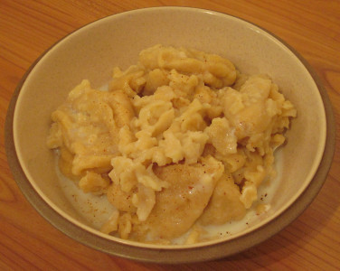

à Portînfé,
Saint Ou.
Jeudi, lé 19 Avri.
Moussieu l'Editeu,
Ch'est la s'maine de Pâques, et quand j'pense ès vièrs jours et chin tchi s'pâsse agniet dans la Semaine Sainte et surtout au Vendrédi Saint, je n'peux pas sinon r'mertchi, comme j'l'ai fait tant d'fais dernièthement, que y'a yeu d'bein grands changements en Jêrri dépis que j'tais mousse.

"Dans chu temps-là," comme j'disais hièr au sé après l'tais, à la Merrienne, "lé Vendrédi Saint, pour un mousse comme mé, 'tait lé pûs têrriblye jour d'l'année. À qu'menchi, quand nou se l'vait, i' fallait mettre ses bouons habits, et dans les djais heuthes nou s'en allait à la chapelle, après l'êcole du Dînmanche. La chapelle tait pliene d'gens tous habillyis en né, et les sermons qu'nou-s-entendait 'taient pûs sombres que tout l'restant. Après l'service, nou s'en allait siez-sé pour dîner, mais ch'tait tréjous des fiottes, que j'dêtestais et tchi 'taient souvent brûlées. Un jour, yunne d'mes soeurs r'fûsit d'en mangi et ma mèhe l'enfrumit dans l'gal'tas parmi les râts et les souothis, et li dit qu'ou restéthait là tandis qu'ou n'tait pas prête à mangi ses fiottes. Ou 'tait têtoigne, la p'tite garde, et ou restit là pour des heuthes, mais quand la niet vînt ou s'mînt à fliantchi des cô-d'pids sûs la porte et descendit. Ou voulait dithe pûs tard que sinon pour les râts et les souothis oulle éthait resté là pour une s'maine pûstôt que d'obéï, car ou 'tait têtoigne comme une mûle."
"Chonna couort dans les famillyes!" s'fit la Merrienne.
Moussieu, j'éthais voulu dithe tchiquechose là-d'sûs, mais je n'voulais pas provotchi un ardgûment et, don, j'continuis.
"Quand v'nait l'arlévée," j'li dis, "j'éthais voulu aller cherchi des nids, mais ma mèthe me donnait un livre de sermons et je n'pouvais pas bouogi du bouon parleux. Mais l'pièthe venait quand tout l'monde dêshallait pour un autre service à la chapelle, et j'me r'souveins d'une bordée que l'prédicateur me fit si peux par chein tch'i' dit s'arriv'thait dans la niet à des p'tits garçons tchi n'taient pas convertis, que je n'pus pas dormi. Oh tchi têrriblye jour, lé Vendrédi Saint!"
"Ch'n'est pas d'même à ch'teu," s'fit la Merrienne. "Les gens vont vaie l'football et les églyises et chapelles sont prêsque vièdes. Je n'crais pas que ch'est un bouon signe. Ichîn et là y'a ocquo des congrégâtions, mais i' m'semblye que les mauvais jours sont v'nus, quand nou peut dithe d'la grande mâjorité du monde qu'i' n'y prennent pûs d'pliaisi."
Après chonna, Moussie, j'nos mîmes à pâsler d'la mort du Baillyi, et j'tionmes d'accord que ch'tait une grande perte pour l'Ile. "J'me r'souveins du Baillyi Bertram," je m'fis, "un homme charmant et habile, mais i' souffrait de mal santé, et 'tait souvent malade. Quant à Moussieu Vernon, tchi l'succédit, ch'tait un assez drôle d'homme sûs un sens, mais i' travaillait tréjous dans l'întéthêt d'la p'tite île ouèsqu'il avait 'té né, nou pouorrait prêsque dithe par accident. I' restit Baillyi pour pûs d'trente ans, et éthait fait bein mûs de se r'tither chînq ans d'vant, quand i' 'tait en pliene possession de ses fatchultés. Nou n'a qu'à vaie san portrait dans la Cour Royale pour réalîser que ch'tait un homme des pûs r'merquables."
"Après li vînt Moussieu d'Carteret," ou s'fit, "épis Moussieu Coutanche, tchi sut comment surmonter touos l's obstacles tch'i' rencontrait. Té, tu n'as jamais 'tait d'même, car tu ès intérrêssi dans tant d'choses que tu n'as jamais concentré sûs autchune. Par exemplye, tu as tréjous aimé les 'shows' d'bêtes, même quand tu n'avais rein à montrer."
"J'avais espéthance d'montrer ma g'niche de deux ans," je m'fis, "mais oulle a l'nez crotchi et n'a qu'trais trancs, et je n'crais pas que les Juges li donn'naient un riban s'i' n'y en avait pas yun pour la pûs vilaine quédolle sûs l'tèrrain. Ch'est drôle assez, Merrienne, mais y'a d's années que j'tâche d'aver dans m'n êtablye tchiquechose de qualité, mais sans autchun succès. I' faut que j'en pâsle à Francis Lé Ruez, ou au Sieur Rom'thi, tchi savent non seulement les fabritchi mais les vendre à bouon prix."
"À ch'teu," ou s'fit, "tchèsque tu crais du temps et des patates?"
"Lé temps," j'li dis, "a fait les patates pousser, comme dans ma bordeuse, mais à ch'teu chein tchi lûs faut ch'est hardi d'bieau solé. Ah! Merrienne, tchi dommage que nou n'peut pas gouverner l'temps! Que j'voudrais en aver l'pouvé!"
La Merrienne souôrit. "Et, sans doute, si ch'tait d'même," ou s'fit, "tu voudrais du bieau temps pour ta bordeuse, et du mauvais temps pour les patates à tes vaisîns. Tu n'es pas un Jêrriais pour rein, man Ph'lip. Mais, dis-mé, ès tu d'opinion que la saison s'sa bouonne pour nos fermiers?"
"Oui," j'li dis, "jamais miyeuthe, pour bein tch'i' sachent comment s'prendre."
"Chu moussieu-là tchi vînt l'autre sé pour en pâsler à nos jeunes fermiers," ou s'fit. "Tchèsque-tu crais de chein tch'i' lûs dit?"
"Chein que j'en crais," j'li raîponnis, "ch'est qu'autchune personne tchi veint de d'hors pour donner d's avis ès fermiers de Jêrri sûs la tchultuthe dé patates ou autchune autre chose, perd dan temps et f'thait mûs d'rester siez-li à tchultiver des mèrgots. Lé fermyi de Jêrri est comme la natuthe humaine, tchi n'change pas."
"Pourtant," ou s'fit, "un homme ne peut jamais dithe tch'i' n'a rein à apprendre dans son commerce."
"Y'en a yun tch'a tréjous peut l'dithe et tchi l'dit ocquo," j'li dis, "et ch'est le fermyi d'Jêrri."
Ph'lip
28/4/1962
Viyiz étout: